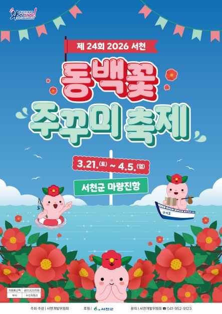
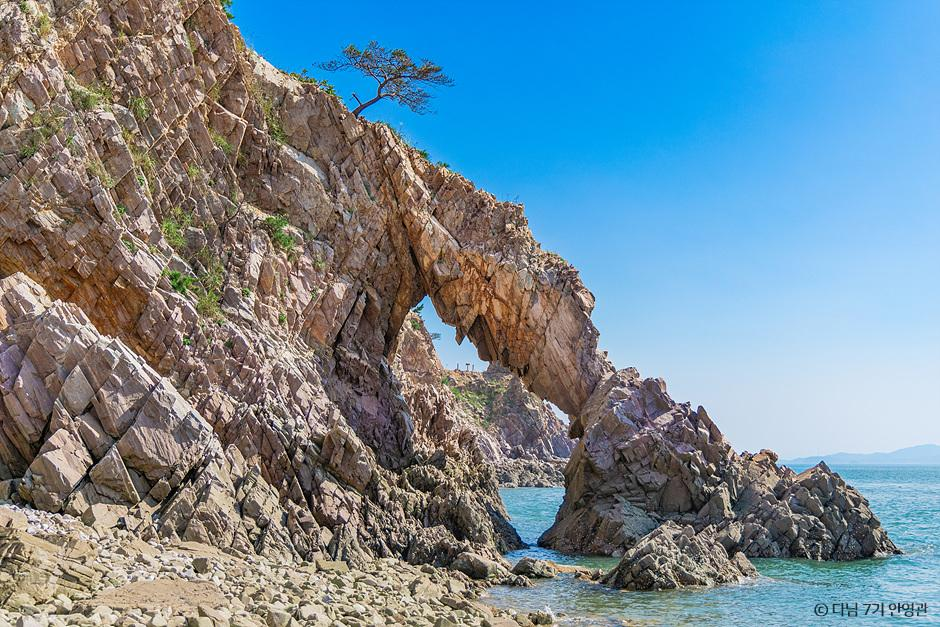
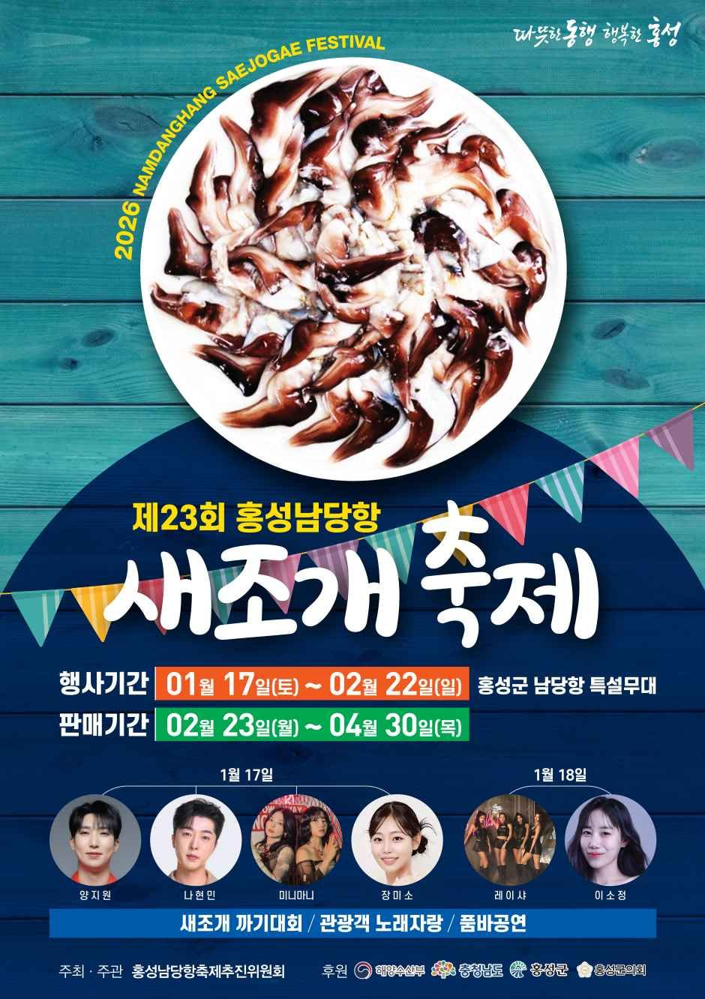
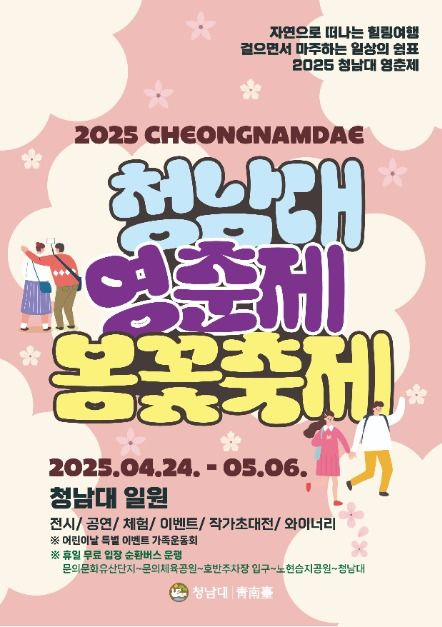
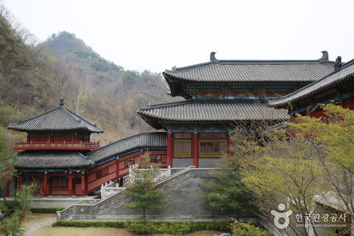
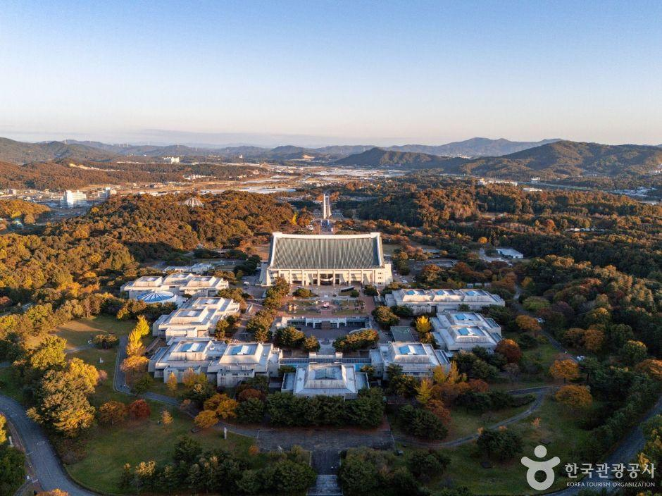
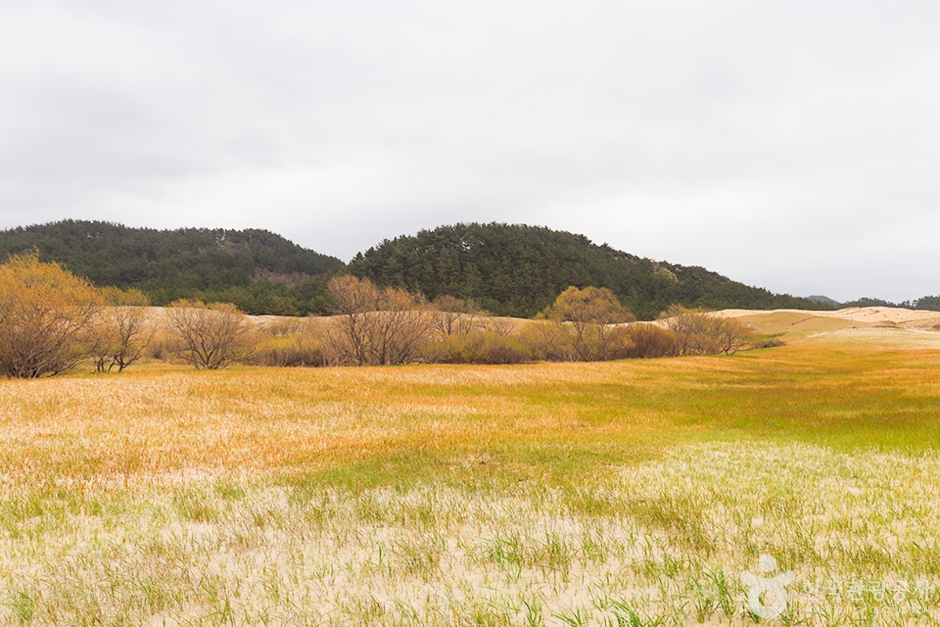
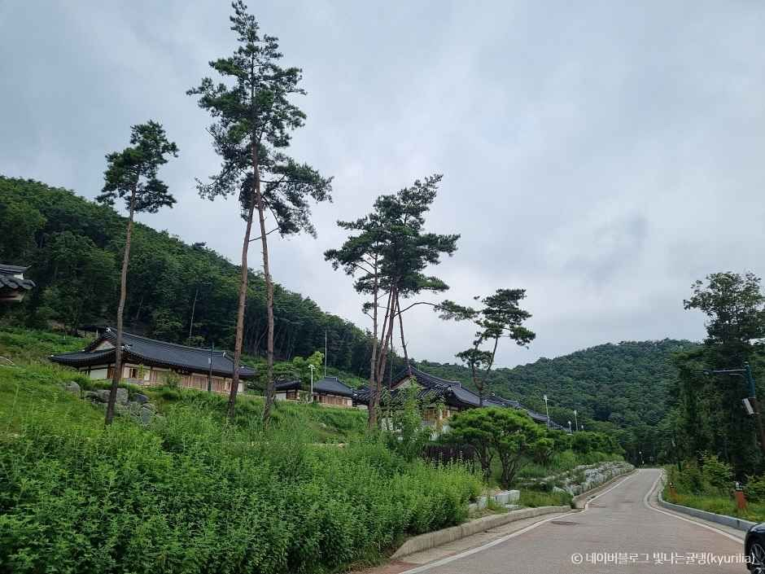

느긋함, 자연, 도시의 균형
급할 거 뭐 있겠유.
서해 노을도 보고, 호수길도 걷고, 빵이랑 시장 구경도
하다 보면 어느새 마음이 풀려유.
충청도는 충청남도/충청북도와 함께 대전·세종을 포함한 중부권 지역으로, 바다와 산, 도시 인프라가 균형 있게 어우러진 곳이에요.
| 충청남도 | 충청북도 | 대전 | 세종 |
|---|---|---|---|
| 서해 바다 | 산과 호수 | 과학도시 | 호수공원 |
| 노을 | 캠핑·드라이브 | 빵지순례 | 산책 |
| 해산물 | 산과 호수 | 내륙 자연 | 도심 여행 |

충청도는 대한민국 중부에 자리한 지역으로, 서해의 바다 풍경부터 내륙의 산과 호수,
그리고 대전·세종 같은 도시 인프라까지 골고루 갖춘 곳입니다.
충남은 서해 노을과 갯벌이 매력이고, 충북은 단양·제천처럼 자연 지형이 멋진 곳들이 많아서 드라이브나 힐링 여행에 잘 맞습니다.
대전은 과학·교육·맛집이 모인 도시라 짧은 일정에도 알차고, 세종은 호수공원 산책 코스가 좋아 느긋하게 쉬기 딱 좋습니다.
봄 시작에 딱 맞는 충청도 축제 4선이에요.



봄 산책/전시/드라이브로 묶기 좋은 관광지 4선이에요.



